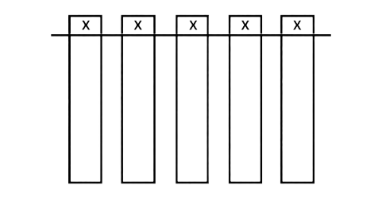

@ STOPAM
Pamatuješ si na mě? Tolik bolesti nemůže zůstat bez TRESTU!
AOPRK VEZNEV S ÍLIČK

01000101 01010010 01010010 01000101 00100000 01010101 01010010 01000101 01010100 00100000 01001100 01001110 01001001 01000100 00100000 01001010 01001001 01001011 01011000 01000111 00100001